East of the Sun and
West of the Moon
1914
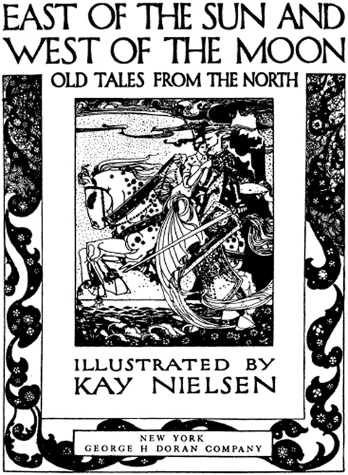
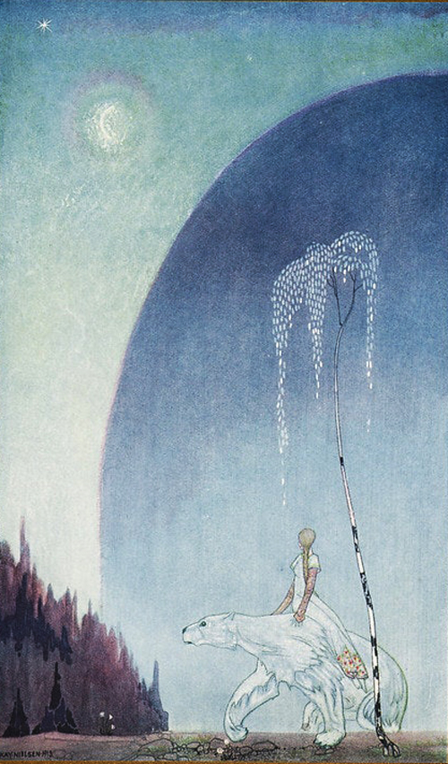
EAST OF THE SUN AND WEST OF THE MOON
"Well, mind and hold tight my shaggy coat and then there’s nothing to fear" said the Bear
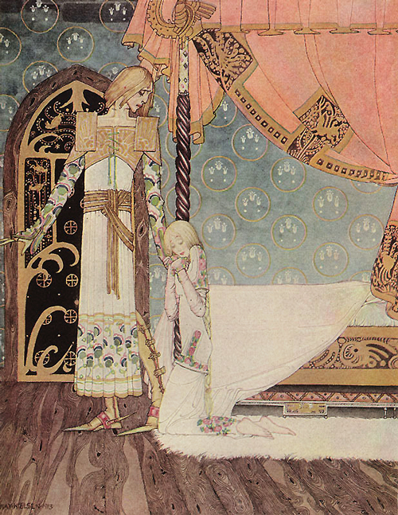
EAST OF THE SUN AND WEST OF THE MOON
"Tell me the way, then" she said "and I’ll search you out"
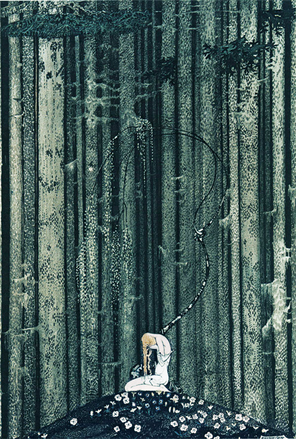
EAST OF THE SUN AND WEST OF THE MOON
And then she lay on a little green patch in the midst of a thick gloomy wood
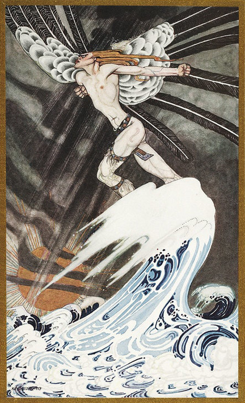
EAST OF THE SUN AND WEST OF THE MOON
The North Wind goes over the sea
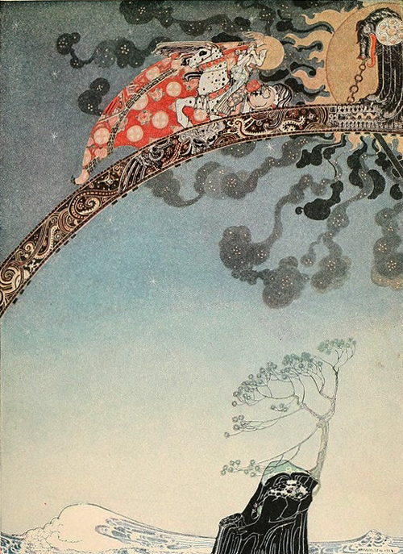
EAST OF THE SUN AND WEST OF THE MOON
And flitted away as far as they could from the Castle that lay
East of the Sun and West of the Moon
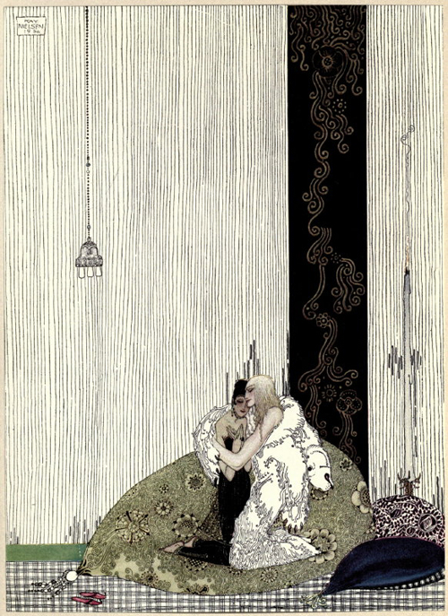
THE BLUE BELT
The Lad in the Bear’s skin, and the King of Arabia’s daughter
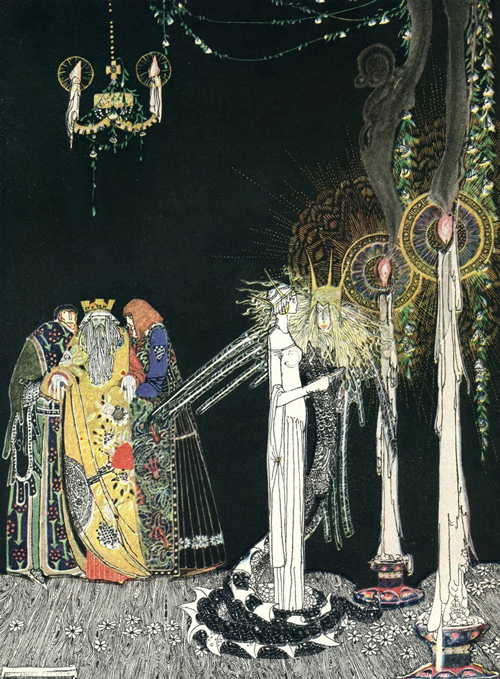
PRINCE LINDWORM
She saw the Lindworm for the first time as he came in and stood by her side
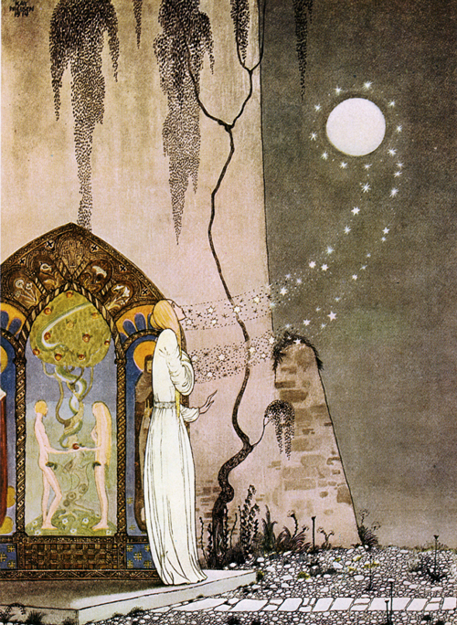
THE LASSIE AND HER GODMOTHER
She could not help setting the door a little ajar, just to peep in, when -
Pop! out flew the Moon
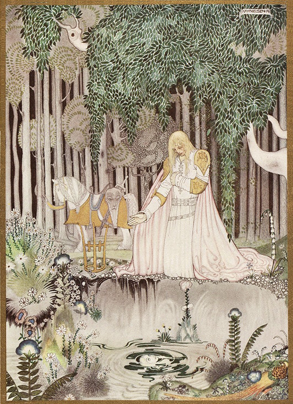
THE LASSIE AND HER GODMOTHER
He too saw the image in the water, but he looked up at once,
and became aware of the lovely Lassie who sat there up in the tree
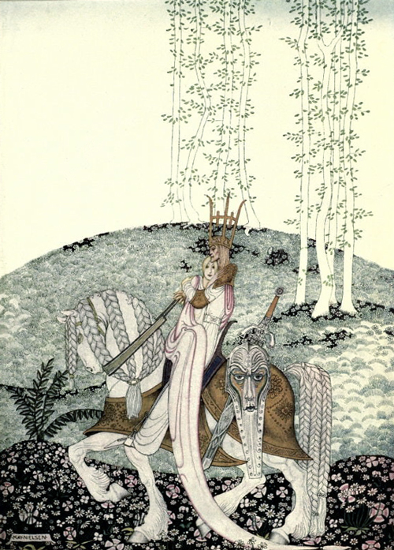
THE LASSIE AND HER GODMOTHER
Then he coaxed her down and took her home
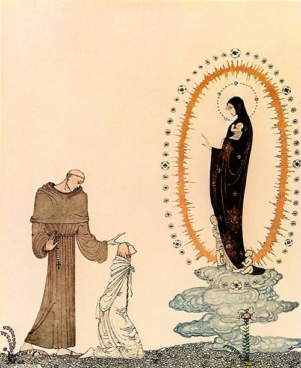
THE LASSIE AND HER GODMOTHER
"I am the Virgin Mary"
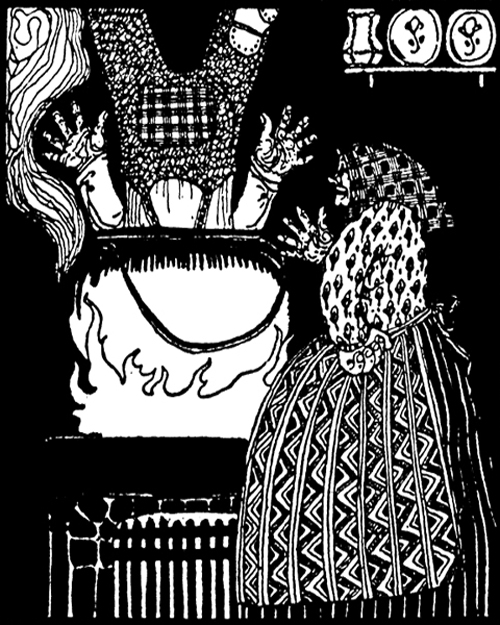
THE HUSBAND WHO WAS TO MIND THE HOUSE
She found him standing on his head in the porridge pot
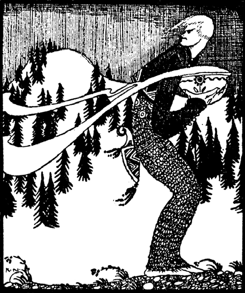
THE LAD WHO WENT TO THE NORTH WIND
Her son had to go up into the safe to fetch meal for cooking
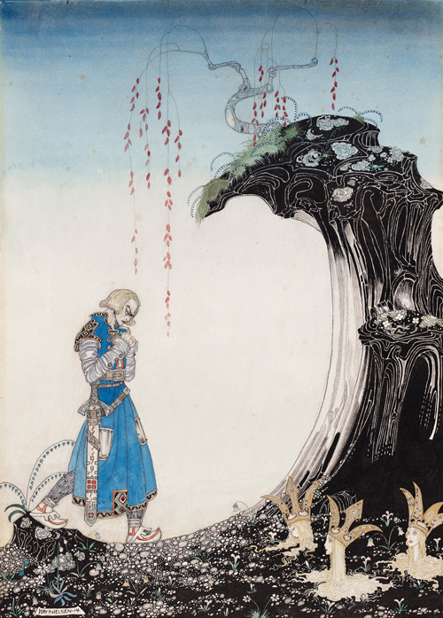
THE THREE PRINCESSES OF WHITELAND
"You’ll come to three Princesses, whom you will see standing in the earth
up to their necks, with only their heads out"
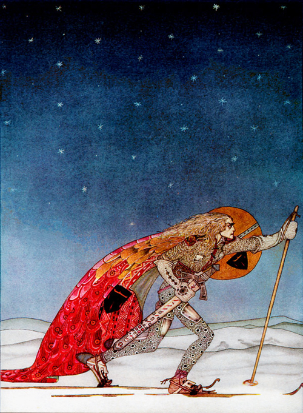
THE THREE PRINCESSES OF WHITELAND
So the man gave him a pair of snow-shoes
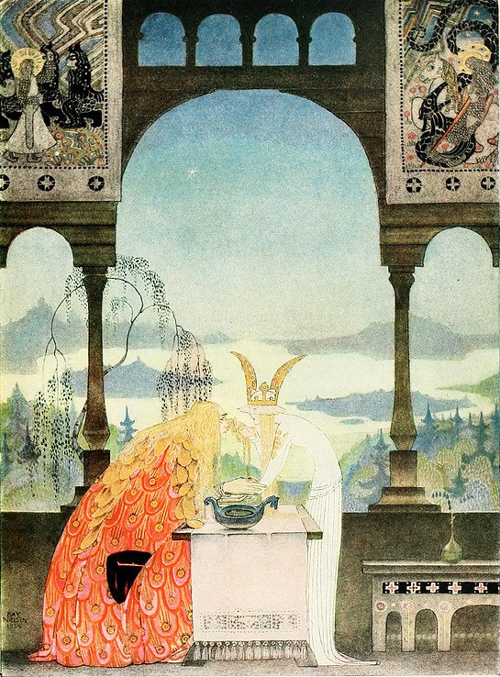
THE THREE PRINCESSES OF WHITELAND
The King went into the Castle, and at first his Queen didn’t know him, he
was so wan and thin, through wandering so far and being so woeful
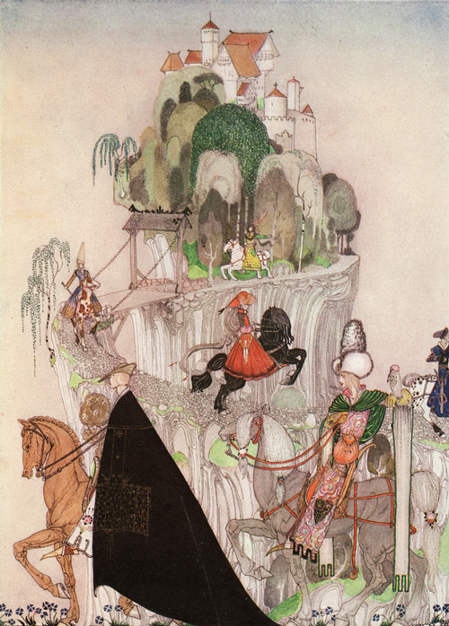
THE GIANT WHO HAD NO HEART IN HIS BODY
The six brothers riding out to woo
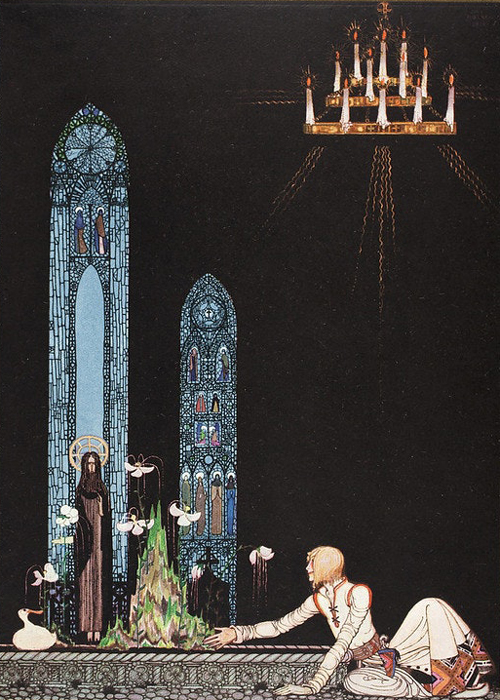
THE GIANT WHO HAD NO HEART IN HIS BODY
"On that island stands a church; in that church is a well;
in that well swims a duck"
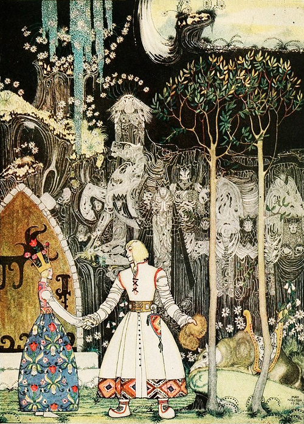
THE GIANT WHO HAD NO HEART IN HIS BODY
He took a long, long farewell of the Princess and, when he got out of the
Giant's door, there stood the Wolf waiting for him
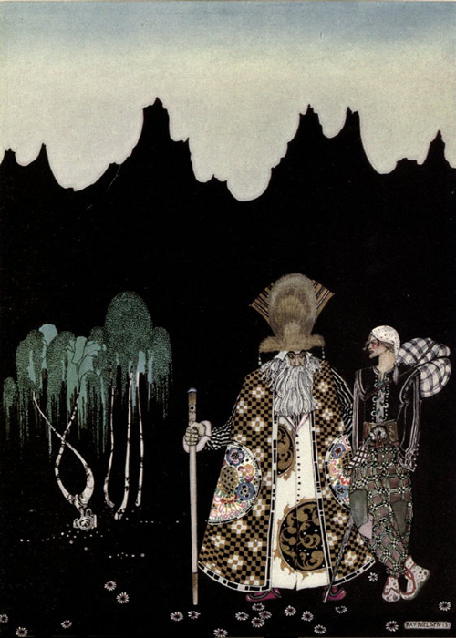
THE WIDOW’S SON
When he had walked a day or so, a strange man met him
“Whither away?” asked the man
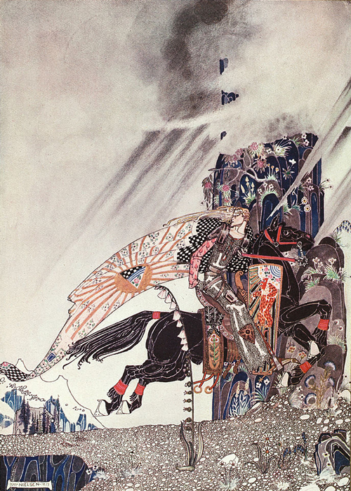
THE WIDOW’S SON
But still the Horse begged him to look behind him
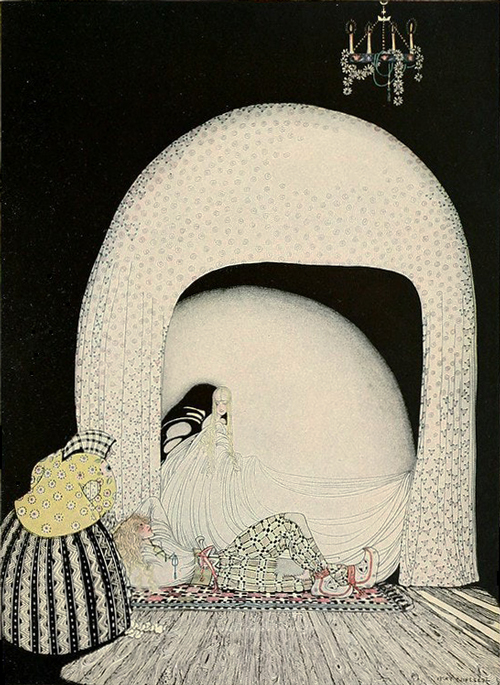
THE WIDOW’S SON
And this time she whisked off the wig; and there lay the lad, so lovely,
and white and red, just as the Princess had seen him in the morning sun
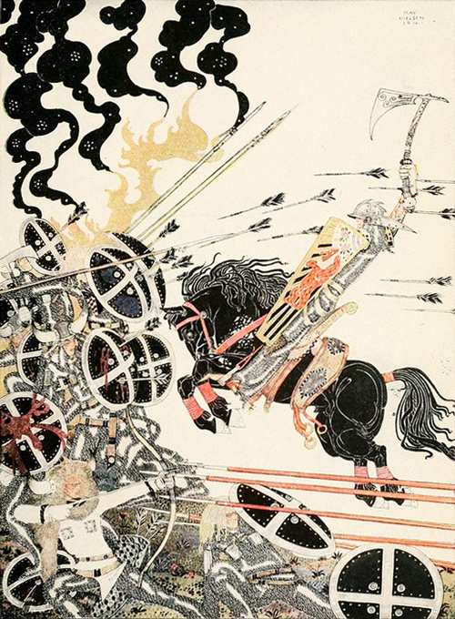
THE WIDOW’S SON
The Lad in the Battle
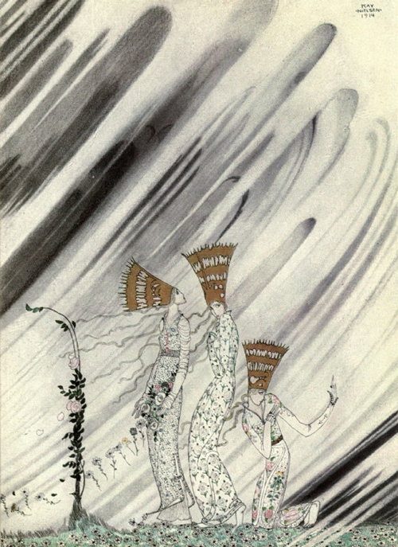
THE THREE PRINCESSES IN THE BLUE MOUNTAIN
Just as they bent down to take the rose a big dense snow-drift came
and carried them away
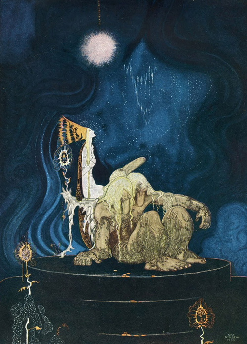
THE THREE PRINCESSES IN THE BLUE MOUNTAIN
The Troll was quite willing, and before long he fell asleep and began snoring
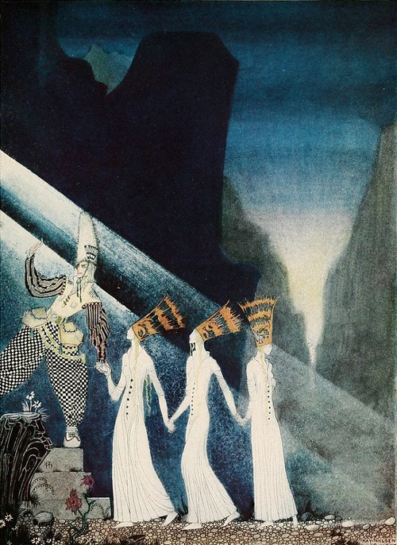
THE THREE PRINCESSES IN THE BLUE MOUNTAIN
As soon as they tugged at the rope, the Captain and the Lieutenant
pulled up the Princesses, the one after the other
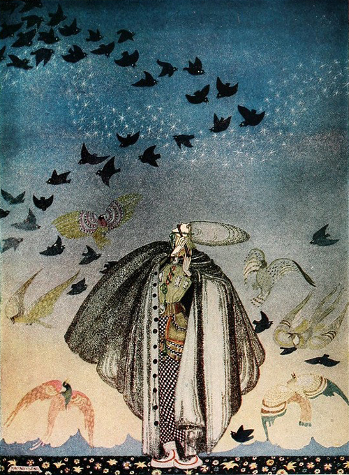
THE THREE PRINCESSES IN THE BLUE MOUNTAIN
No sooner had he whistled than he heard a whizzing and a whirring from
all quarters, and such a large flock of birds swept down that they
blackened all the field in which they settled